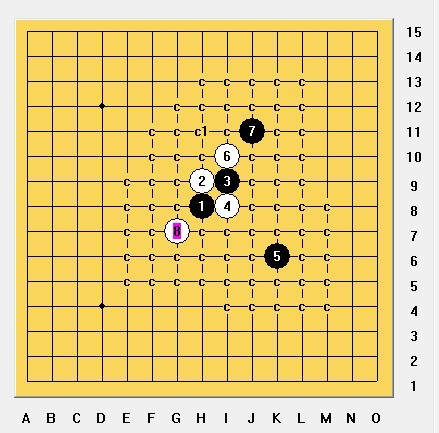

花月弱5、7 白必胜
#1 花月弱5、7 白必胜作者：屏蔽 发表时间：2013-8-24 10:45:55
没有那么困难 只要不被反击迷惑住就行了。
#2 Re:花月弱5、7 白必胜作者：一休哥 发表时间：2013-8-24 15:31:40
我在比赛的时候还用了这个5，这个6已经是最强了吧，#3 Re:花月弱5、7 白必胜作者：天道无常 发表时间：2013-8-24 16:39:56
厉害#4 Re:花月弱5、7 白必胜作者：换你一笑 发表时间：2013-8-24 19:37:42
 花月之败7地毯.zip
花月之败7地毯.zip
洗完澡看了下，有点意思。
有BUG的话请回帖，有时间就帮忙拆。。。
［ 小红眼镜同学于 2013-8-26 15:04:53 时花20金币送鲜花一朵］
［ 小红眼镜同学于 2013-8-26 15:04:53 时花20金币送鲜花一朵］
#5 Re:花月弱5、7 白必胜作者：虎哥 发表时间：2013-8-26 16:28:27
7走6的右边又怎么解决呢#6 Re:虎哥【==Re:花月弱5、7 白必胜==】作者：闲情逸致逗五子 发表时间：2013-8-31 23:40:20
7走6的右边就变成白寒星走法了。#7 Re:花月弱5、7 白必胜作者：岑小鱼 发表时间：2013-9-1 8:43:54
这个白走两头都没拆出来，求详细方法。。。